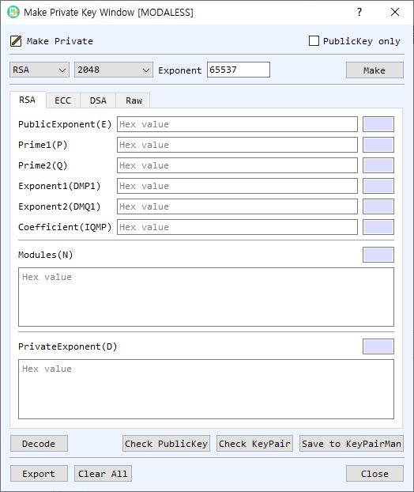

Make Private Key Dialog Guide
The Make Private Key dialog generates asymmetric key pairs and displays their components. It supports RSA, ECC, DSA, and raw-key algorithms, including EdDSA and post-quantum ML-KEM, ML-DSA, and SLH-DSA.

Figure 1. Make Private Key dialog with RSA selected. Use the algorithm tabs to view or edit the corresponding key components.
Screen Areas
- Algorithm — Select the key algorithm: RSA, ECDSA, SM2, DSA, EdDSA, ML-KEM, ML-DSA, or SLH-DSA. The available parameter choices depend on the algorithm.
- Parameter — Choose the key size, curve, or algorithm parameter set. For RSA, the default size is 2048 bits. Other algorithms use their respective sizes or named parameter sets.
- Exponent — Set the RSA public exponent as a decimal value. The default is
65537; this setting applies to RSA key generation. - PublicKey only — When enabled, the dialog generates or exports only public-key data and disables private-key components where applicable.
- RSA tab — Shows RSA public exponent E, primes P and Q, modulus N, private exponent D, CRT exponents DMP1 and DMQ1, and coefficient IQMP. Values are hexadecimal; adjacent fields show their lengths.
- ECC tab — Shows the selected curve name and OID, private key, and public point coordinates PubX and PubY.
- DSA tab — Shows the domain parameters P, Q, and G, plus the public and private key values.
- Raw tab — Select the raw algorithm Name and Param set, then view the raw public and private key values. Raw algorithms include EdDSA, ML-KEM, ML-DSA, and SLH-DSA.
- Make — Generates a key pair using the selected algorithm and parameters, then fills the corresponding tab with the generated components.
- Decode / Check PublicKey / Check KeyPair — Decode the displayed key in BerEditor, validate the public key, or validate the key pair. These controls use the currently selected key tab.
- Save to KeyPairMan — Save the generated key pair to BerEditor's KeyPairMan, when the displayed key data is valid and complete.
- Export — Export the key material from the current tab. The PublicKey only setting determines whether public or private key data is selected for export.
- Clear All / Close — Clear the key component fields or close the dialog.
Generate a Key Pair
- Select the desired Algorithm.
- Choose its Parameter. For RSA, set the key size and decimal Exponent. For ECC, select the curve; for DSA and raw algorithms, select the supported size or parameter set.
- Leave PublicKey only unchecked when you need a complete key pair.
- Select Make. The generated components appear on the algorithm's tab.
- Use Check PublicKey or Check KeyPair to validate the displayed key data.
- Select Save to KeyPairMan to store the key pair, or Export to write it in the desired format.
Inspect or Export Existing Components
- Select the tab for the key algorithm.
- Enter or review the hexadecimal key components. The displayed length fields update as values change.
- Select Decode to open the encoded key in BerEditor's decoder, or use a check button to validate it.
- Select Export and choose whether to export public or private key material using PublicKey only.
Notes
- Private-key fields contain sensitive material. Protect exported private keys and avoid sharing screenshots or logs that reveal key values.
- RSA exponent input is decimal, while key components on the algorithm tabs are hexadecimal.
- ECC curve parameters are shown by both curve name and OID. Use matching curve parameters when exchanging or validating ECC key material.
- The Raw tab is intended for algorithms represented as raw public/private key values; its parameter list changes with the selected raw algorithm.